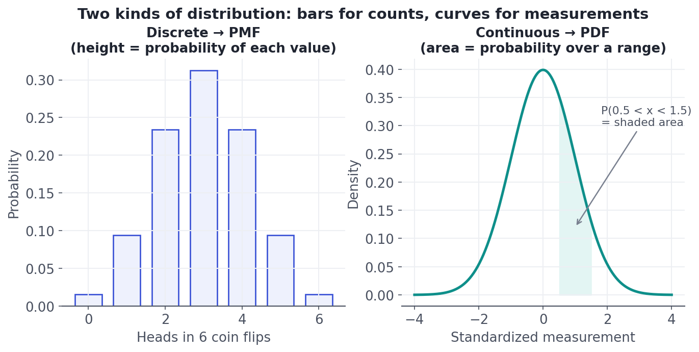
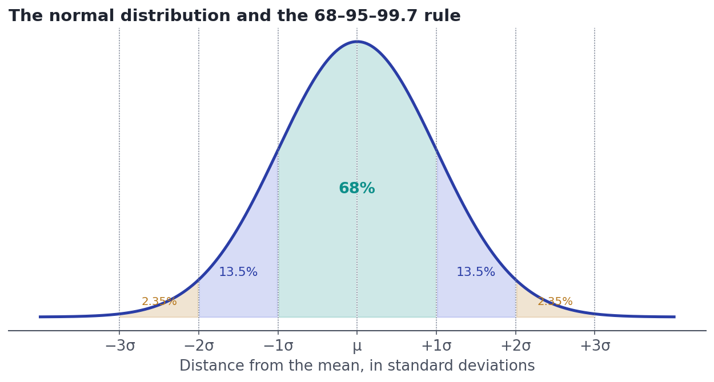
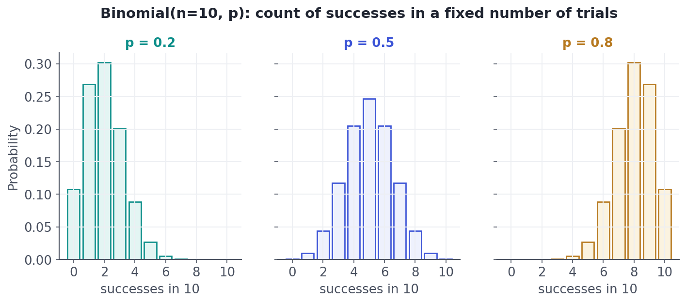
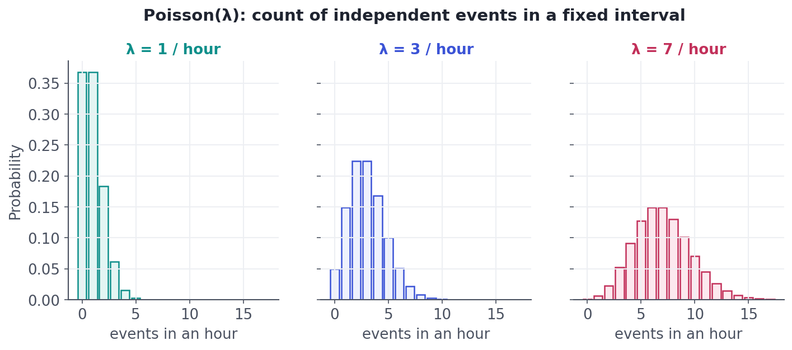
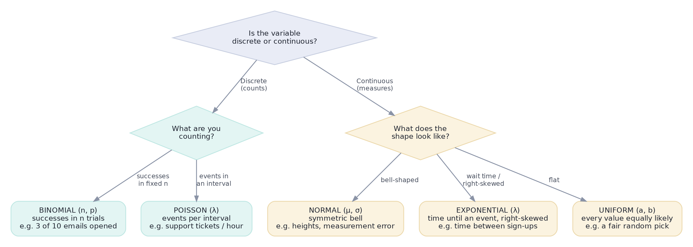

Distributions: Normal, Binomial & Friends
A distribution is a shape that tells you which values are likely. Learn the four you'll meet constantly and how to recognize each.
A distribution is the shape of a variable — it tells you which values are common, which are rare, and how likely any range is. Recognizing which distribution your data follows is a superpower: it lets you compute exact probabilities, flag anomalies, size experiments, and pick the right statistical method. This lesson teaches the four distributions you'll meet constantly and how to tell at a glance which one you're looking at.
Concept · foundationsWhat a distribution actually is
A random variable is just a number whose value is uncertain until observed — the result of a die roll, a customer's spend, tomorrow's ticket count. A distribution describes how probability is spread across that variable's possible values. There are two flavors, matching the discrete/continuous split from Lesson 4.1:
- For a discrete variable, the PMF (probability mass function) gives the probability of each exact value. The bar heights add up to 1.
- For a continuous variable, the PDF (probability density function) is a smooth curve, and probability is the area under it over a range. The probability of any single exact value is effectively zero — only ranges have probability.

Concept · the famous oneThe normal distribution (the bell curve)
The normal distribution — the symmetric 'bell curve' — is the most important shape in statistics. It's fully described by two numbers: its mean μ (where the peak sits) and its standard deviation σ (how wide it is). Heights, measurement errors, and averages of many small effects all tend toward it.
Its most useful property is the empirical rule, also called 68–95–99.7: in any normal distribution, about 68% of values fall within ±1σ of the mean, 95% within ±2σ, and 99.7% within ±3σ.

Measuring distance in standard deviations gives the z-score: z = (x − μ) / σ. A z-score of 2 means 'two SDs above the mean.' Z-scores let you compare values from totally different scales — a test score and a height — on one common ruler, and they're the backbone of the hypothesis tests coming in Lesson 4.8.
Concept · discrete #1The binomial: counting successes
The binomial distribution answers: in n independent yes/no trials, each with success probability p, how many successes do I get? Think 10 emails each opened with probability 0.2, or 100 visitors each converting with probability 0.05. Its two parameters are n (number of trials) and p (probability per trial).

Concept · discrete #2The Poisson: counting rare events over time
The Poisson distribution answers: how many independent events happen in a fixed interval, when they occur at an average rate λ? Support tickets per hour, website crashes per day, typos per page. Its single parameter λ (lambda) is both the average count and — neatly — its variance.

MethodWhich distribution when?
You don't memorize formulas; you recognize situations. Walk any variable down this tree and you'll usually land on the right model. (Two more continuous shapes appear here: the uniform, where every value in a range is equally likely, and the exponential, the right-skewed distribution of waiting times between Poisson events.)

Worked exampleComputing real probabilities
Once you've named the distribution, a library does the arithmetic. Here we use scipy (Python's scientific toolkit) to answer concrete questions with each of the three distributions. Notice the pattern: build the distribution with its parameters, then ask it for a probability.
from scipy import stats
# NORMAL: adult heights, mean 170 cm, sd 7 cm.
heights = stats.norm(loc=170, scale=7)
print("Normal N(mean=170, sd=7):")
print(f" P(163 < height < 177) = {heights.cdf(177) - heights.cdf(163):.3f} <- the '68%' band")
print(f" P(height > 184 cm) = {heights.sf(184):.3f}")
# BINOMIAL: send 10 emails, each opened independently with probability 0.2.
opens = stats.binom(n=10, p=0.2)
print("Binomial n=10, p=0.2:")
print(f" P(exactly 3 opened) = {opens.pmf(3):.3f}")
print(f" P(5 or more opened) = {opens.sf(4):.3f}")
# POISSON: support tickets arrive at 3 per hour on average.
tickets = stats.poisson(mu=3)
print("Poisson lambda=3 per hour:")
print(f" P(a quiet hour: 0) = {tickets.pmf(0):.3f}")
print(f" P(swamped: 6 or more) = {tickets.sf(5):.3f}")Normal N(mean=170, sd=7): P(163 < height < 177) = 0.683 <- the '68%' band P(height > 184 cm) = 0.023 Binomial n=10, p=0.2: P(exactly 3 opened) = 0.201 P(5 or more opened) = 0.033 Poisson lambda=3 per hour: P(a quiet hour: 0) = 0.050 P(swamped: 6 or more) = 0.084
Read the results back to the pictures. The normal answer 0.683 is exactly the 68% band from the empirical-rule chart (163 to 177 is μ ± 1σ). The binomial 0.201 is the tall bar at 3 in the p=0.2 panel. The Poisson 0.050 says a totally quiet support hour is uncommon when you average 3 tickets. The shapes and the numbers are the same facts told two ways.
★ Key points to remember
- A distribution describes how probability is spread over a variable's values: a PMF (bar heights) for discrete, a PDF (area under a curve) for continuous.
- Normal(μ, σ) — symmetric bell; the 68–95–99.7 rule covers ±1/2/3 SD; the z-score (x−μ)/σ measures distance in SDs.
- Binomial(n, p) — number of successes in n yes/no trials; centered near n×p.
- Poisson(λ) — number of events in an interval at rate λ; mean and variance both equal λ.
- Choose a distribution by recognizing the situation (discrete vs continuous, then the mechanism), not by memorizing formulas.
◆ Practice▸
Show solution & reasoning
(a) Binomial(n = 20, p = 0.5) — a fixed number of independent yes/no trials. (b) Poisson(λ = 15) — independent events in a fixed interval at a known rate. (c) Normal(μ, σ) — a continuous, roughly symmetric measurement. (d) Uniform over {1,…,6} — every outcome equally likely (the discrete uniform).
Show solution & reasoning
This is Binomial(n = 50, p = 0.10). The expected count is n×p = 50 × 0.10 = 5 conversions. The distribution is centered near 5, slightly right-skewed (since p is small and counts can't go below 0), and because n is moderately large it already looks bell-ish — foreshadowing how the binomial approaches a normal shape, which powers the experiment math in Track 6.
◎ Deep dive: z-scores, and how these distributions connect▸
Standardizing with z-scores. Any normal distribution can be converted to the standard normal — mean 0, SD 1 — by the transformation z = (x − μ) / σ. This is why a single table (or one scipy call) handles every normal problem: you translate your value into 'how many SDs from the mean,' then look up the probability. A z of +1.96 marks the spot beyond which only 2.5% of the data lies — a number you'll see again and again in confidence intervals.
The distributions are secretly related. The Poisson is the limit of the binomial when n is huge and p is tiny (many trials, rare success), with λ = n×p — which is why both count events. And by the Central Limit Theorem (Lesson 4.6), sums of binomial or Poisson counts, and indeed averages of almost anything, drift toward the normal as the count grows. That's why the bell curve shows up everywhere: it is the natural shape of accumulated randomness.
The exponential's twist. If events arrive Poisson with rate λ, the waiting time between consecutive events follows an exponential distribution — continuous and right-skewed. Counts and waits are two views of the same random process: Poisson counts the events, exponential times the gaps.
Be ready to "name a distribution for this situation and justify it" — counts in fixed trials → binomial; events per interval → Poisson; a symmetric measurement or an average of many things → normal. Also expect "state the 68–95–99.7 rule" and "what's a z-score?" Crisp, correct answers here signal real fluency.